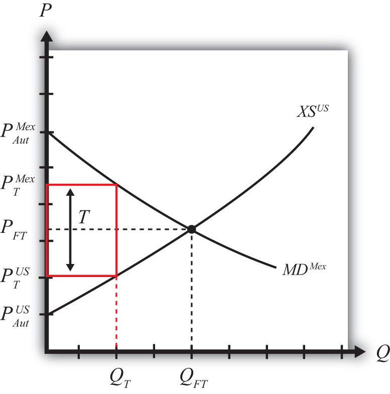

Suppose Mexico, the importing country in free trade, imposes a specific tariff on imports of wheat. As a tax on imports, the tariff will inhibit the flow of wheat across the border. It will now cost more to move the product from the United States into Mexico.
As a result, the supply of wheat to the Mexican market will fall, inducing an increase in the price of wheat. Since wheat is homogeneous and the market is perfectly competitive, the price of all wheat sold in Mexico, both Mexican wheat and U.S. imports, will rise in price. The higher price will reduce Mexico’s import demand.
The reduced wheat supply to Mexico will shift back supply to the U.S. market. Since Mexico is assumed to be a large importer, the supply shifted back to the U.S. market will be enough to induce a reduction in the U.S. price. The lower price will reduce the U.S. export supply.
For this reason, a country that is a large importer is said to have monopsony power in tradeAnother term to describe a large importing country—that is, a country whose policy actions can affect international prices.. A monopsony arises whenever there is a single buyer of a product. A monopsony can gain an advantage for itself by reducing its demand for a product in order to induce a reduction in the price. In a similar way, a country with monopsony power can reduce its demand for imports (by setting a tariff) to lower the price it pays for the imported product. Note that these price effects are identical in direction to the price effects of an import quota, a voluntary export restraint, and an export tax.
A new tariff-ridden equilibrium will be reached when the following two conditions are satisfied:
and
where T is the tariff, PTMex is the price in Mexico after the tariff, and PTUS is the price in the United States after the tariff.
The first condition represents a price wedge between the final U.S. price and the Mexican price equal to the amount of the tariff. The prices must differ by the tariff because U.S. suppliers of wheat must receive the same price for their product regardless of whether the product is sold in the United States or Mexico, and all wheat sold in Mexico must be sold at the same price. Since a tax is collected at the border, the only way for these price equalities within countries to arise is if the price differs across countries by the amount of the tax.
The second condition states that the amount the United States wants to export at its new lower price must be equal to the amount Mexico wants to import at its new higher price. This condition guarantees that world supply of wheat equals world demand for wheat.
The tariff equilibrium is depicted graphically in Figure 7.12 "Depicting a Tariff Equilibrium: Large Country Case". The Mexican price of wheat rises from PFT to PTMex, which reduces its import demand from QFT to QT. The U.S. price of wheat falls from PFT to PTUS, which also reduces its export supply from QFT to QT. The difference in the prices between the two markets is equal to the specific tariff rate, T.
Figure 7.12 Depicting a Tariff Equilibrium: Large Country Case
Notice that there is a unique set of prices that satisfies the equilibrium conditions for every potential tariff that is set. If the tariff were set higher than T, the price wedge would rise, causing a further increase in the Mexican price, a further decrease in the U.S. price, and a further reduction in the quantity traded.
At the extreme, if the tariff were set equal to the difference in autarky prices (i.e., ), then the quantity traded would fall to zero. In other words, the tariff would prohibit trade. Indeed, any tariff set greater than or equal to the difference in autarky prices would eliminate trade and cause the countries to revert to autarky in that market. Thus we define a prohibitive tariff as any tariff, Tpro, such that
For an intuitive explanation about why these price changes would likely occur in a real-world setting, read the following story about the likely dynamic adjustment process. Technically, this story is not a part of the partial equilibrium model, which is a static model that does not contain adjustment dynamics. However, it is worthwhile to think about how a real market adjusts to the equilibria described in these simple models.
Suppose the United States and Mexico are initially in a free trade equilibrium. Mexico imports wheat at the free trade price of $10 per bushel. Imagine that the market for unprocessed wheat in both the United States and Mexico is located in a warehouse in each country. Each morning, wheat arrives from the suppliers and is placed in the warehouse for sale. During the day, consumers of unprocessed wheat arrive to buy the supply. For simplicity, assume there is no service charge collected by the intermediary that runs the warehouses. Thus, for each bushel sold, $10 passes from the consumer directly to the producer.
Each day, the wheat market clears in the United States and Mexico at the price of $10. This means that the quantity of wheat supplied at the beginning of the day is equal to the quantity purchased by consumers during the day. Supply equals demand in each market at the free trade price of $10.
Now suppose that Mexico places a $2 specific tariff on imports of wheat. Let’s assume that the agents in the model react slowly and rather naively to the change. Let’s also suppose that the $2 tariff is a complete surprise.
Each day, prior to the tariff, trucks carrying U.S. wheat would cross the Mexican border in the wee hours, unencumbered, en route to the Mexican wheat market. On the day the tariff is imposed, the trucks are stopped and inspected. The drivers are informed that they must pay $2 for each bushel that crosses into Mexico.
Suppose the U.S. exporters of wheat naively pay the tax and ship the same number of bushels to the Mexican market that day. However, to recoup their losses, they raise the price by the full $2. The wheat for sale in Mexico now is separated into two groups. The imported U.S. wheat now has a price tag of $12, while the Mexican-supplied wheat retains the $10 price. Mexican consumers now face a choice. However, since Mexican and U.S. wheat are homogeneous, the choice is simple. Every Mexican consumer will want to purchase the Mexican wheat at $10. No one will want the U.S. wheat. Of course, sometime during the day, Mexican wheat will run out and consumers will either have to buy the more expensive wheat or wait till the next day. Thus some $12 U.S. wheat will sell, but not the full amount supplied. At the end of the day, a surplus will remain. This means that there will be an excess demand for Mexican wheat and an excess supply of U.S. wheat in the Mexican market.
Mexican producers of wheat will quickly realize that they can supply more to the market and raise their price. A higher price is possible because the competition is now charging $12. The higher supply and higher price will raise the profitability of the domestic wheat producers. (Note that the supply of wheat may not rise quickly since it is grown over an annual cycle. However, the supply of a different type of good could be raised rapidly. The length of this adjustment will depend on the nature of the product.) U.S. exporters will quickly realize that no one wants to buy their wheat at a price of $12. Their response will be to reduce export supply and lower their price in the Mexican market.
As time passes, in the Mexican market, the price of Mexican-supplied wheat will rise from $10 and the price of U.S. supplied wheat will fall from $12 until the two prices meet somewhere in between. The homogeneity of the goods requires that if both goods are to be sold in the Mexican market, then they must sell at the same price in equilibrium.
As these changes take place in the Mexican market, other changes occur in the U.S. market. When U.S. exporters of wheat begin to sell less in Mexico, that excess supply is shifted back to the U.S. market. The warehouse in the United States begins to fill up with more wheat than U.S. consumers are willing to buy at the initial price of $10. Thus at the end of each day, wheat supplies remain unsold. An inventory begins to pile up. Producers realize that the only way to unload the excess wheat is to cut the price. Thus the price falls in the U.S. market. At lower prices, though, U.S. producers are willing to supply less, thus production is cut back as well.
In the end, the U.S. price falls and the Mexican price rises until the two prices differ by $2, the amount of the tariff. A Mexican price of $11.50 and a U.S. price of $9.50 is one possibility. A Mexican price of $11 and a U.S. price of $9 is another. U.S. producers now receive the same lower price for wheat whether they sell in the United States or Mexico. The exported wheat is sold at the higher Mexican price, but $2 per bushel is paid to the Mexican government as tariff revenue. Thus U.S. exporters receive the U.S. price for the wheat sold in Mexico.
The higher price in Mexico raises domestic supply and reduces domestic demand, thus reducing their demand for imports. The lower price in the United States reduces U.S. supply, raises U.S. demand, and thus lowers U.S. export supply to Mexico. In a two-country world, the $2 price differential that arises must be such that U.S. export supply equals Mexican import demand.
Two of the effects of a tariff are worthy of emphasis. First, although a tariff represents a tax placed solely on imported goods, the domestic price of both imported and domestically produced goods will rise. In other words, a tariff will cause local producers of the product to raise their prices. Why?
In the model, it is assumed that domestic goods are perfectly substitutable for imported goods (i.e., the goods are homogeneous). When the price of imported goods rises due to the tariff, consumers will shift their demand from foreign to domestic suppliers. The extra demand will allow domestic producers an opportunity to raise output and prices to clear the market. In so doing, they will also raise their profit. Thus as long as domestic goods are substitutable for imports and as long as the domestic firms are profit seekers, the price of the domestically produced goods will rise along with the import price.
The average consumer may not recognize this rather obvious point. For example, suppose the United States places a tariff on imported automobiles. Consumers of U.S.-made automobiles may fail to realize that they are likely to be affected. After all, they might reason, the tax is placed only on imported automobiles. Surely this would raise the imports’ prices and hurt consumers of foreign cars, but why would that affect the price of U.S. cars? The reason, of course, is that the import car market and the domestic car market are interconnected. Indeed, the only way U.S.-made car prices would not be affected by the tariff is if consumers were completely unwilling to substitute U.S. cars for imported cars or if U.S. automakers were unwilling to take advantage of a profit-raising possibility. These conditions are probably unlikely in most markets around the world.
The second interesting price effect arises because the importing country is large. When a large importing country places a tariff on an imported product, it will cause the foreign price to fall. The reason? The tariff will reduce imports into the domestic country, and since its imports represent a sizeable proportion of the world market, world demand for the product will fall. The reduction in demand will force profit-seeking firms in the rest of the world to lower output and price in order to clear the market.
The effect on the foreign price is sometimes called the terms of trade effect. The terms of trade is sometimes defined as the price of a country’s export goods divided by the price of its import goods. Here, since the importing country’s import good will fall in price, the country’s terms of trade will rise. Thus a tariff implemented by a large country will cause an improvement in the country’s terms of trade.
Jeopardy Questions. As in the popular television game show, you are given an answer to a question and you must respond with the question. For example, if the answer is “a tax on imports,” then the correct question is “What is a tariff?”
Complete the following descriptions of the equilibrium conditions with a tariff in place.